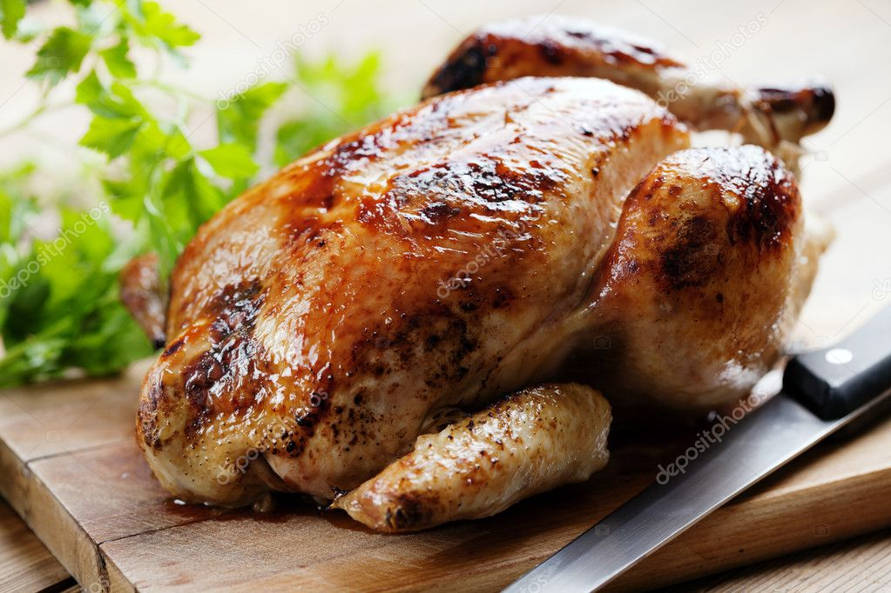

Pollo Horno
Receta de pollo horno

Ingredientes
- Un pollo entero limpio
- Limon
- Aceite de oliva
- Sal
Elaboracion (Pasos)
- Calentar el horno a 180º
- Con el pollo limpio untarlo de aceite y meterle un limon dentro
- Sal pimentar al gusto
- Meterlo en el horno durante hora y media
- Cuando este listo sacarlo del horno y servir